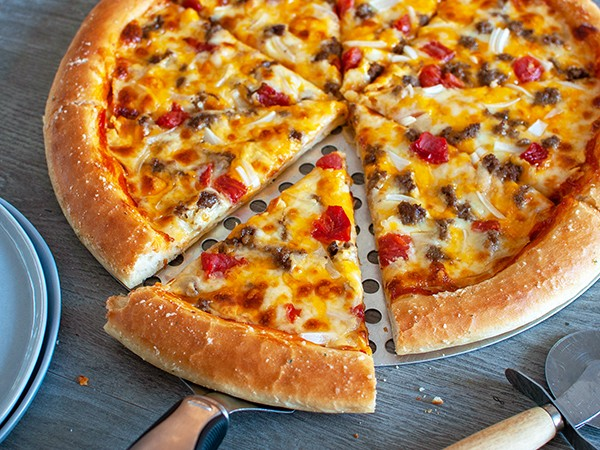

Cheeseburger Pizza

Ingredients
- 2 package 7 1/2 oz pkg refrigerated Biscuits
- 3/4 lb Ground beef
- 1/2 cup Chopped onion
- 2 tsp Prepared mustard
- 1/8 tsp Hot pepper sauce
- 2 Tbs Sliced scallions
- 1/2 cup Shredded Mozzarella cheese Sliced pitted ripe olives And dill pickle chips for Garnish,if desired
- 1 cn 11 oz condensed CheddarCheese soup/sauce
Procedure
-
STEP 1
biscuits into a 12" round greased baking sheet or pizza pan.Bake 400 degrees for 10 minutes. Meanwhile,cook and stir beef and onion in a skillet until beef is browned and onion is tender.Drain off fat.Stir in soup, mustard and hot pepper sauce.heat through. Spread beef mixture over biscuits to within 1/2" of the edge. Top with remaining ingredients. -
STEP 2
Bake 5 minutes more or until biscuits are golden brown.Garnish with sliced pitted ripe olives and dill pickle chips,if desired.Cut into wedges and serve.Makes 6 servings.